Case study 01 · Enterprise UX & UI
ENGAGE:
25 000 PEOPLE, ONE HOME SCREEN.
An employee app that everyone had installed and almost nobody used for real work. I ran the research, rebuilt the information architecture, designed the interface, and shipped the specs and the front-end detail with the build team.
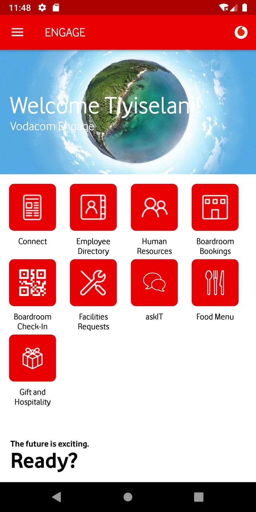
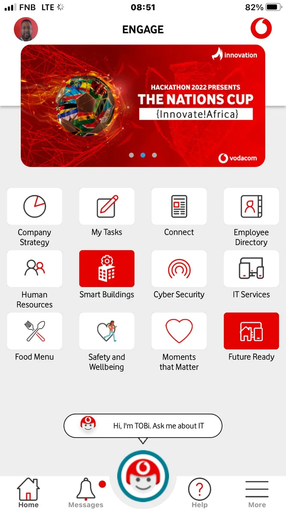
DRAG THE HANDLE.
Left is the original eleven-tile grid, captured on an Android test device during the audit. Right is the shipped home screen: grouped and labelled tiles, four shortcuts the employee pins themselves, and the assistant anchored above the tab bar.
Both are real screenshots from the project, not mock-ups. The rest of this page is how the second one happened.
01
THE BRIEF SAID “REFRESH THE UI”.
THE DATA SAID SOMETHING ELSE.
Engage is the internal app for everything an employee needs at work: news, payslips, leave, boardrooms, the canteen menu, IT support. Install numbers were high, because it ships on the corporate device build. Weekly active use was not. The request that landed on my desk was a visual refresh.
Before touching a pixel I pulled three weeks of analytics and sat with six employees. The interface was not ugly. It was unfindable. That reframing is what the rest of this case study is built on.
What the brief assumed
- People dislike the look of the app
- New icons and a new colour pass will fix adoption
- The features are fine, the skin is dated
- Success = a modern-looking home screen
What I found in week one
- 62% of sessions ended on the home screen with no tap through
- The four most-needed tasks were not in the app at all
- Sessions expired after 15 minutes, so people moved to desktop
- Success = time to complete a real task, measured before and after
02
RESEARCH THAT FITTED THE BUDGET
AND STILL CHANGED DECISIONS.
No research budget and a fourteen-week runway. So I chose methods that were cheap, fast and hard to argue with: talk to people at their desks, then prove it at scale with numbers.
6 contextual interviews
Employees in Midrand and Century City, at their own desks, using their own phones. Roles from call centre to field engineering.
3 shadowing sessions
I watched a full morning of work. This is where the “I will just ask a colleague” workaround showed up three separate times.
Analytics review
Three weeks of screen views and drop-off. The home screen was a wall, not a doorway.
Card sort, n = 18
Open sort first, then a closed sort to validate the four groups I proposed. 86% agreement.
Support ticket mining
Six months of IT tickets, tagged and counted. Password resets and VPN made up 41% of everything.
Unmoderated benchmark
12 people, 5 tasks, timed. The same test was re-run after launch so the numbers could be compared fairly.
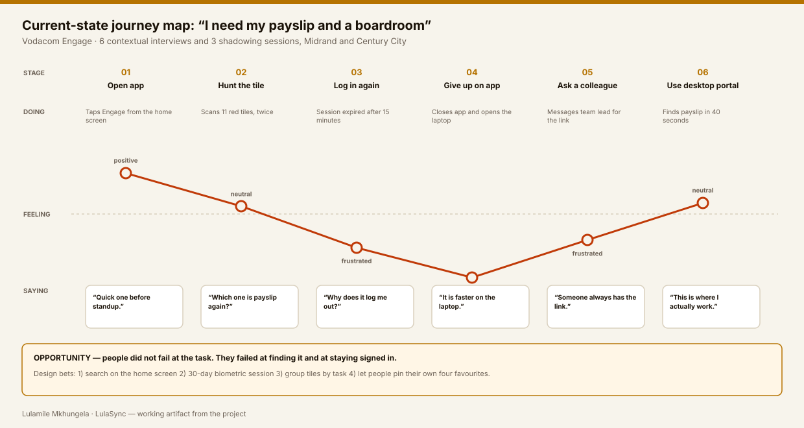
Field notes: four minutes on a Tuesday
Look at the clock in the corner of these five screens: 11:48, 11:49, 11:49, 11:50, 11:50. They are one continuous walkthrough on one test device, and they are the whole problem in sequence. In four minutes I could reproduce every complaint I had heard in the interviews.
11:48 — Home. Eleven identical red tiles.
Nothing tells you where to start.
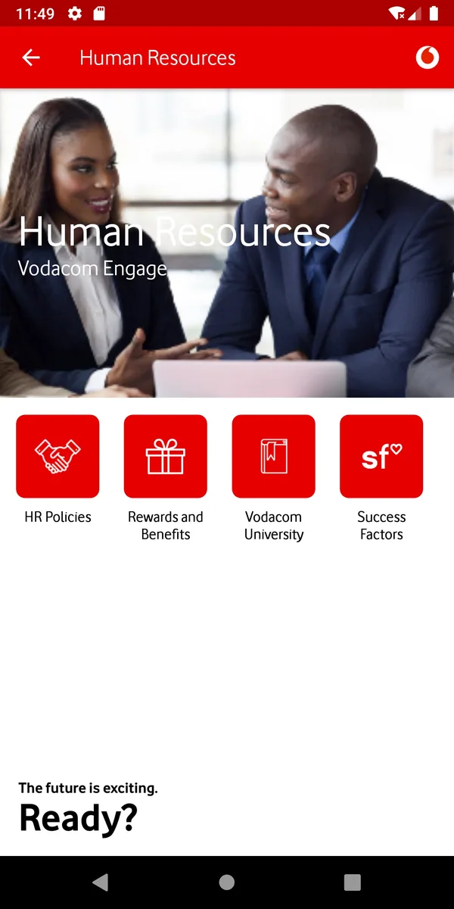
11:49 — HR. A stock photo takes half the screen;
payslip is not one of the
four options.
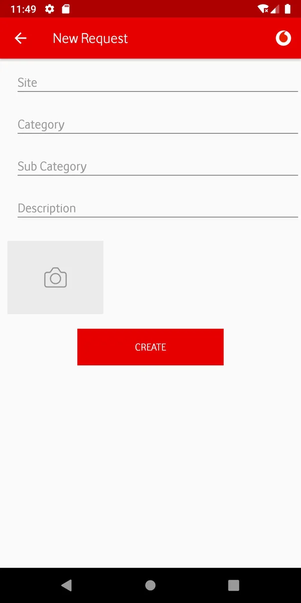
11:49 — Request. Site, Category, Sub Category,
Description. No help, no
examples, no validation.
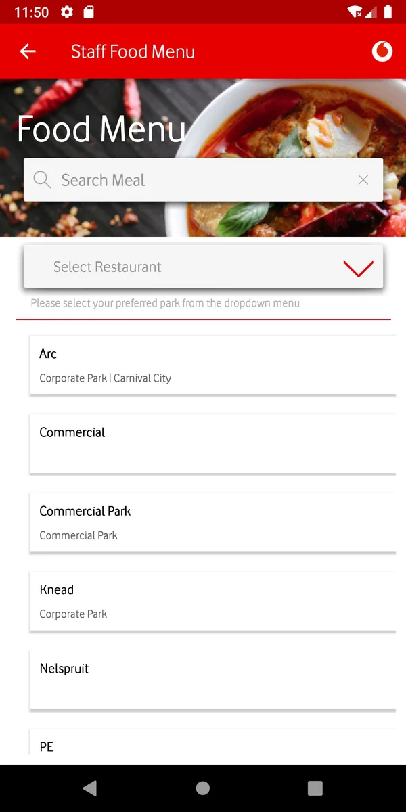
11:50 — Canteen. A 2.4 MB photo loads first,
then asks which park you are
at.
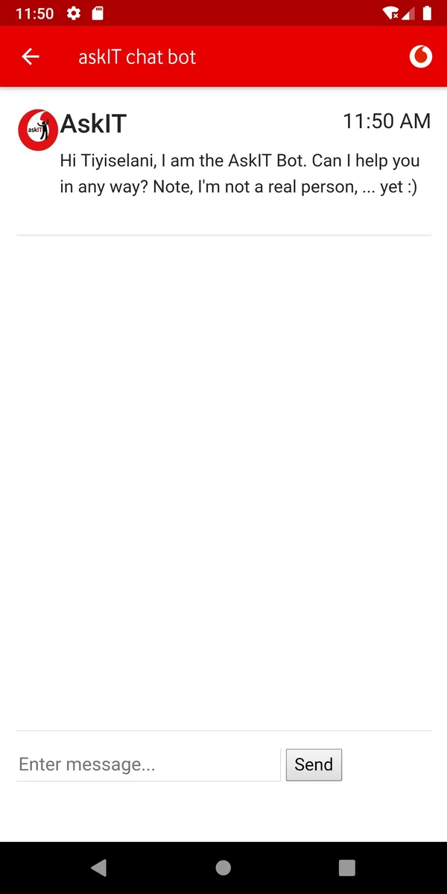
11:50 — askIT. “I'm not a real person, … yet :)”
and then an empty room.
What that four-minute walk told me
Every screen was built by a competent team, and every screen answered a different question than the employee was asking. The canteen screen wanted to know which restaurant; the person wanted to know what is for lunch. The request form wanted a category; the person wanted a light fixed. The bot wanted a question; the person wanted permission to ask one.
So the design problem was never decoration. It was the distance between what the app asks and what the person came to do.
03
ONE PROBLEM STATEMENT
FOUR DESIGN PRINCIPLES.
Problem statement
An employee with two minutes between meetings cannot reliably reach the four things they need most, because the app presents eleven equal options, forgets who they are every fifteen minutes, and hides its help behind a menu.
1. Four things, first
Everything else can be a search away. The top four tasks get a permanent home, chosen by the person, not by us.
2. Never make me sign in twice
A 30-day session with biometric unlock. Security agreed once we scoped it to read-only screens.
3. Words before icons
Every icon carries a text label. Tested with employees over 50 and with screen readers.
4. Help is a button, not a place
The assistant follows you instead of living in a menu, and always offers a human.
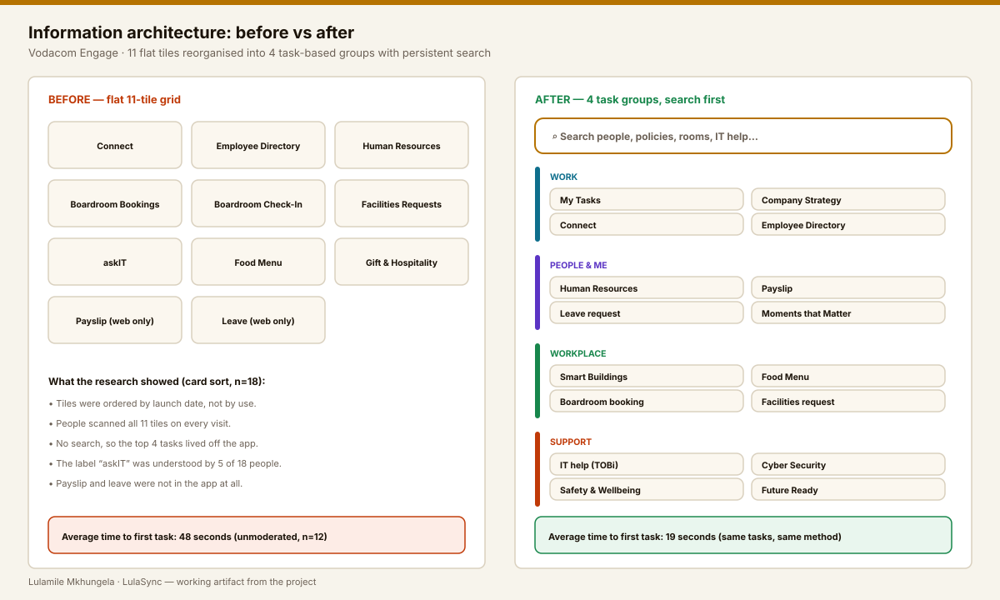
04
THREE OPTIONS, TESTED FLAT
BEFORE ANY VISUAL DESIGN.
I do not polish a direction that has not survived a test. Three grey wireframe prototypes went to nine employees in week five. Option B won, but option C taught us more.
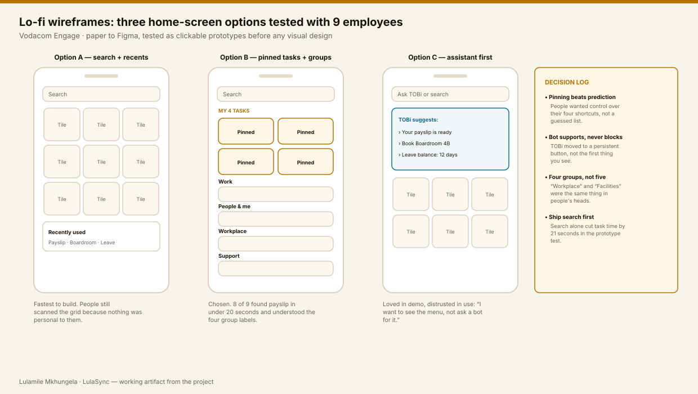
Home: grouped, labelled, personal
Four groups replace eleven equal tiles. Above them sit the four shortcuts the employee pins themselves. The assistant is anchored above the tab bar so it travels with you instead of hiding under “More”.
Trade-off I accepted: pinning adds an onboarding step. We solved it by pre-filling the four most-used tiles for the person's department and letting them change any of them.
Search: the cheapest fix with the biggest effect
A single field that searches people, policies, rooms and IT articles. Recent searches persist per device. In the prototype test, search alone cut the average time to first task by 21 seconds, which is why it shipped in release one on its own.
Detail that mattered: the empty state lists the four most common searches instead of showing a blank box. People copied those queries rather than inventing their own.
Requests: from four blank fields to a guided flow
The old form asked for Site, Category, Sub Category and Description with no help text and no validation. People guessed, submitted, and were rejected days later.
The redesign asks one question per step, pre-fills the site from the building QR check-in, shows examples under every field, and previews the ticket before it is sent.
Canteen: a design problem that was really a performance problem
Everyone opens this screen at 12:30, standing in a queue, on a congested network. It loaded a 2.4 MB photo before showing a single menu item, then asked you to pick a restaurant from a dropdown.
I cut the hero image, cached the menu of the day, remembered the person's usual site, and showed text first. Design fix and frontend fix in the same decision: 4.1 s to 1.3 s on a throttled 3G profile.
Accessibility was part of the spec, not a later audit
Contrast
Every text and icon pair checked against WCAG 2.1 AA. The old red on red combination failed at 2.9:1 and was replaced.
Targets
Minimum 44 × 44 px, with 8 px between adjacent tiles. Field staff use the app with gloves on.
Screen readers
Tile labels, group headings and live regions for status changes, tested with TalkBack and VoiceOver.
Language
Plain English at roughly a grade 8 reading level. The app serves people whose first language is not English.
05
TRY THE FLOW
THE WAY THE TESTERS DID.
This is a working rebuild of the tested prototype, coded here in HTML and CSS. Pick a task and watch the screen respond — the same four paths the nine testers walked.
Why the designer built the prototype in code
A Figma prototype cannot show a 400 ms debounce, a skeleton state or a 44 px tap target under a real thumb. Building the tested flow in HTML let me hand engineering an interaction spec they could read as behaviour, not as a description of behaviour.
06
HANDOFF WITHOUT THE DRIFT.
I sat in the sprint, not next to it. Components were specified as props and states, the same names the engineers used in code, and I reviewed every pull request that touched the interface.
// The spec engineers received for a tile — states, not adjectives tile: { label: string, // always present, never icon-only icon: string, badge?: number, // unread count, hidden at 0 state: 'ready' | 'loading' | 'locked' | 'offline', minTarget: 44, // px, enforced in the component onPress: route | sheet } /* offline = last cached content + timestamp, never a blank state */
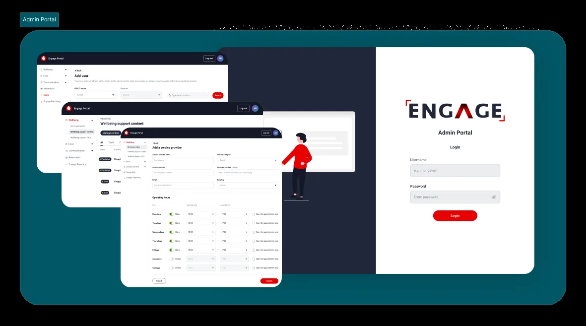
07
WHAT CHANGED, MEASURED THE SAME WAY TWICE.
The pre-launch benchmark was re-run four weeks after release with the same tasks, the same method and a fresh set of twelve participants.
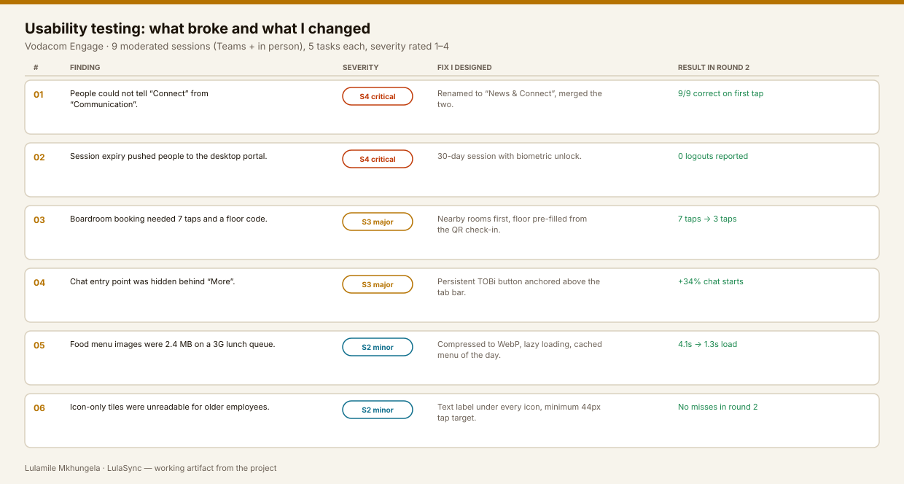
08
WHAT I WOULD DO DIFFERENTLY.
Test with field staff sooner
My first three sessions were all office based. Field engineers use the app with gloves, in sunlight, on a weak signal, and they surfaced problems the office group never hit.
Bring security into week one
The 30-day session was the single biggest win and it took three weeks of negotiation. Starting that conversation earlier would have put it in release one.
Instrument before designing
I added event tracking during design. Had it existed from the start, I could have proved the drop-off argument in a day instead of a fortnight.
HAVE A PRODUCT PEOPLE INSTALL
BUT DO NOT USE?
That is usually a findability and trust problem, not a visual one. Send me the flow you care about most and I will tell you what I would measure first.